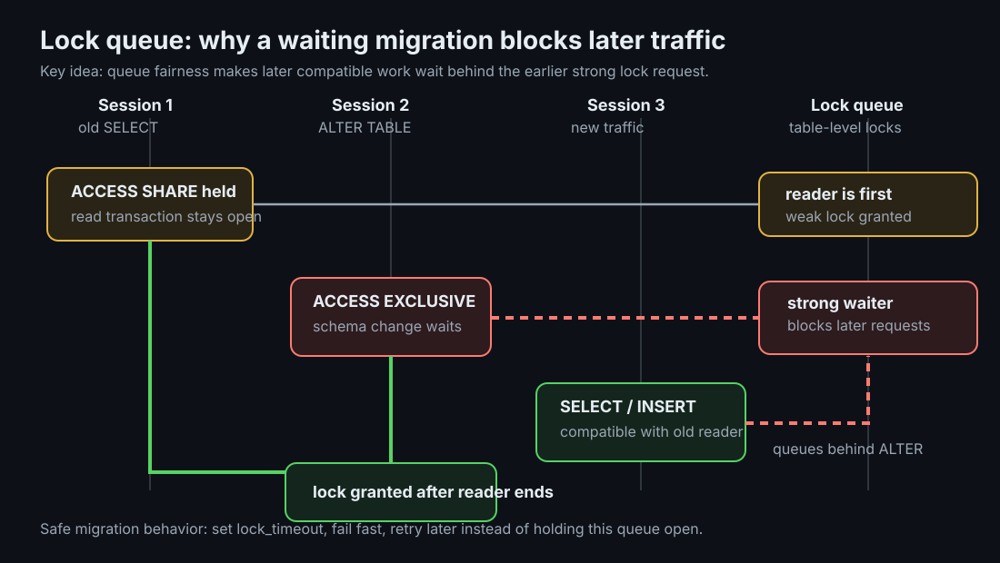
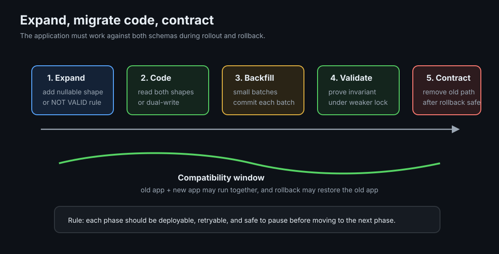

Zero-Downtime Migrations
A schema migration is a deploy against shared mutable state. The danger is not only what changes, it is what locks, what waits, and whether old and new application versions can survive together.
TLDR
- Watch the queue: a strong lock waiting behind one old transaction can block later reads and writes that would otherwise be safe.
- Bound lock waits: use short
lock_timeoutso a migration fails and retries instead of staying in front of production traffic. - Prefer expand, migrate code, contract: first add a backward-compatible shape, then move application reads and writes, then remove the old shape after rollout and rollback are safe.
- Know operation safety: catalog-only changes are usually cheap; rewrites, validation scans, and blocking index builds need staged alternatives.
Mental Model
Every table has a lock queue. A weak lock, like the one taken by a normal SELECT, can coexist with many other operations. A strong lock, like many ALTER TABLE forms need, must wait until incompatible holders leave. PostgreSQL also preserves queue fairness: when a strong lock is waiting, later weak locks queue behind it instead of skipping ahead.
That fairness rule is the common failure mode. The schema change may take milliseconds after it gets the lock, but while it waits, it becomes a gate in front of traffic. The useful question is not only "how long does this DDL run?" It is also "what lock does it request, how long can it wait, and who queues behind it?"

Ground-Up Explanation
PostgreSQL has many table-level lock modes, but migration planning usually starts with three:
| Lock | Taken by | Why it matters |
|---|---|---|
ACCESS SHARE | SELECT | Conflicts only with ACCESS EXCLUSIVE, but can still hold the queue open. |
SHARE | plain CREATE INDEX | Allows reads, blocks writes for the index build. |
ACCESS EXCLUSIVE | many ALTER TABLE forms, DROP, TRUNCATE, VACUUM FULL | Conflicts with everything, including reads. |
Locks are held until the transaction ends, not merely until the statement that first touched the table ends. An idle transaction can therefore block a migration long after the user-facing query seems finished. The first safety rule is to make waiting cheap: set lock_timeout, let the migration fail fast, and retry when the queue is healthier.
The second rule is compatibility. During a rolling deploy, old application code, new application code, old schema, and new schema can overlap. During rollback, they overlap again. A migration is safe only if the app runs correctly against both shapes until the rollout window is closed.
Concept Deep Dive
Operation safety catalog
| Operation | Risk or lock behavior | Safer path |
|---|---|---|
| Add nullable column | Usually catalog-only, brief strong lock. | Use short lock_timeout; deploy code that tolerates nulls. |
| Add column with constant default | Catalog-only in PostgreSQL 11+ for non-volatile defaults. | Safe with bounded lock wait; verify version before relying on this. |
| Add column with volatile default | Can rewrite existing rows. | Add nullable column first, backfill in batches, then set default for new writes. |
Add NOT NULL column | Requires values for existing rows, often rewrite or scan. | Expand-contract: nullable column, batched backfill, validated check, then SET NOT NULL. |
| Change column type | Often rewrites the table; widening some varchar limits can be metadata-only. | Prefer shadow column, dual-write, backfill, switch reads, drop old column. |
| Rename column or table | Metadata-only but breaks running code that still uses the old name. | Use a shadow path or compatibility layer until all code versions move. |
| Add index | Plain build blocks writes. | Use CREATE INDEX CONCURRENTLY, outside a transaction block. |
| Add foreign key | Locks both tables and validates existing rows. | Add NOT VALID, then VALIDATE CONSTRAINT. |
Add CHECK constraint | Immediate validation scans existing rows. | Add NOT VALID, then validate after data is clean. |
| Drop column | Metadata-only but any remaining code reference fails. | Stop all reads and writes first; drop in a later deploy. |
| Set or drop default | Metadata-only for future writes. | Safe with bounded lock wait; does not backfill existing rows. |
Expand, migrate code, contract
The general recipe is three deployable states. In expand, add the new schema in a way old code can ignore and new code can use. In migrate code, write both shapes or read from the new shape with a fallback, then backfill existing data in small committed batches. In contract, remove the old shape only after every running and rollback-capable application version no longer needs it.

expand: add new nullable shape, default, index, or constraint shell
migrate code: make application tolerate both old and new shapes
backfill: update old rows in bounded batches with pauses
contract: validate invariants, enforce constraints, remove old shape laterTimeouts are different tools
lock_timeout limits time spent waiting to acquire a lock. It protects live traffic from a migration that cannot start safely. statement_timeout limits total statement runtime after planning, waiting, and execution. It protects the database from long-running work. idle_in_transaction_session_timeout closes sessions that opened a transaction and then stopped doing work while still holding locks. Safe migration tooling usually uses a short lock_timeout, a task-appropriate statement_timeout, and an environment-wide idle transaction guard.
Implementation Details
- Make migrations retryable: a failed lock attempt should leave no partial state, sleep with jitter, and retry under the same timeout.
- Separate schema deploys from application deploys: each step must be valid before, during, and after a rolling application rollout.
- Backfill in batches: commit each batch, limit rows per transaction, pause between batches, and monitor vacuum, replica lag, and write latency.
- Use validation as a phase:
NOT VALIDconstraints let new writes obey the rule immediately while old rows are checked later under a weaker lock. - Watch blockers directly: join
pg_blocking_pids()withpg_stat_activityto see the waiter, blocker, age, and query text. - Treat rollbacks as first-class: the previous binary may run after the schema expanded, so old code must not crash on extra columns or missing assumptions.
Production examples
Use expand-contract for changes that cross application versions: renaming a column, splitting one column into two, replacing an enum with a lookup table, adding a non-null requirement to existing rows, or changing how a status is represented. The safe path is to add the new shape first, run code that can read both shapes, backfill old rows, validate the invariant, then remove the old shape after rollback risk is gone.
Use short lock_timeout for DDL that may wait behind live traffic: adding constraints, changing defaults, renaming objects, and taking locks for contract cleanup. A failed migration attempt is better than a migration waiting quietly while every request piles up behind it.
Backfills should look like background traffic, not a one-time database siege. Batch by primary key ranges, commit often, pause between batches, and track write latency, dead tuples, autovacuum, and replica lag. The migration is not finished until the application and database are both stable under normal traffic.
Lab Evidence
The runnable lab is labs/postgres/migrations: a 300k-row orders table, a Go load driver printing per-second p50/p99/max latency, and each failure mode as a Make target run against live traffic.
make break
30s reader + unguarded ALTER. The load terminal shows ops drop to zero for the full reader duration.
make test
Same scenario with lock_timeout='1s' + retry. Load shows ~1s p99 blips instead of a stall.
make index-break / index-safe
Plain index build stalls INSERTs; CONCURRENTLY keeps them flowing, measurably slower to finish.
Measured: the same migration, two outcomes
From a real run on 2026-07-07, load at ~900 ops/s. Without lock_timeout, the load driver recorded 27 consecutive seconds of zero completed queries while the ALTER waited behind a 30s reader:
t= 8s ops= 611 errs=0 p50=6.9ms p99=22.1ms max=26.6ms
t= 9s ops=0 errs=0 << STALL: no query completed this second >>
... (27 consecutive stall seconds)
t= 36s ops= 303 errs=0 p50=7.3ms p99=28.0328s max=28.0372s
done. worst single-query latency or stall: 28.0372sWith SET lock_timeout = '1s' and a retry loop (success on attempt 10), the worst any query saw in the entire run was 1.03s:
t= 12s ops= 188 errs=0 p50=6.4ms p99=1.0276s max=1.0324s
t= 16s ops= 948 errs=0 p50=6.1ms p99=25.7ms max=1.0343s
done. worst single-query latency or stall: 1.0343sThe batched backfill filled 329,081 rows in 66 committing batches (9.7s total); the NOT VALID, VALIDATE, SET NOT NULL contract step took 0.111s; CREATE INDEX CONCURRENTLY finished in 0.242s with no recorded write stall.
Production Notes
- Encode the rules in tooling, not memory: GitLab's migration helpers and
strong_migrationsare useful because they catch unsafe operations before review. - Run dangerous migration classes during low-traffic windows even when they are designed to be online; reduced queue pressure makes retries gentler.
- Replicas replay strong locks too. A migration on the primary can stall read replicas or conflict with long replica queries.
- For high-write tables, rehearse on production-sized data and watch lock wait time, replica lag, autovacuum behavior, and application error rate.
Code Pointers
| Code | Why it matters |
|---|---|
scripts/unsafe_alter.sql | The one-line ALTER that creates the measured stall; the risk is context, not syntax. |
scripts/safe_alter.sql | The short lock_timeout pattern that retries instead of waiting behind traffic. |
scripts/validate_region.sql | The full NOT VALID, VALIDATE, SET NOT NULL contract sequence. |
src/main.go | Load generator with per-second percentiles, and the batched backfill loop. |
README.md | Measured outputs and notes for lock queues, backfill, validation, and concurrent index creation. |
Makefile | Targets for unsafe/safe ALTER, backfill, validation, index breakage, and safe indexing. |
compose.yaml | Postgres service and deterministic lab environment. |
Further Reading & Watching
- PostgreSQL at Scale: Database Schema Changes Without Downtime by Braintree/PayPal. Useful operation-by-operation safety catalog.
- Zero-downtime Postgres migrations, the hard parts by GoCardless, on discovering the lock-queue trap in production.
- GitLab migration style guide, production rules from one of the largest public Postgres installs.
- strong_migrations, the dangerous-operation checklist as a linter; the README is a reference in itself.
- 7 tips for dealing with Postgres locks by Marco Slot, Citus.
- PostgreSQL docs: ALTER TABLE, the per-form lock levels; verify any claim here against this page.
- PostgreSQL docs: Explicit Locking, the full conflict matrix.
- Book: Martin Kleppmann, Designing Data-Intensive Applications, ch. 4 (schema evolution) and ch. 7 (transactions and locking).